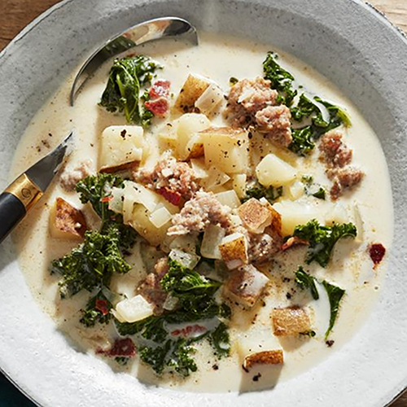

Zuppa Tuscana
This is our favorite clone recipe of Olive Garden's Zuppa Tuscana. We make this quite a bit during autumn and winter.
This recipe is so good on those cold nights when you want something to warm your bones. You can use mild or spicy Italian sausage or add more red pepper flakes to adjust the spiciness.